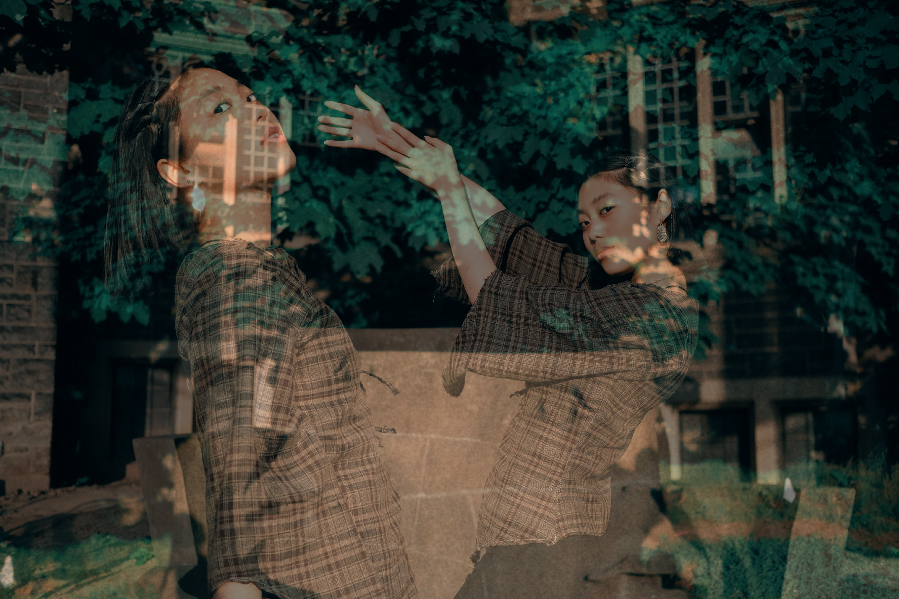
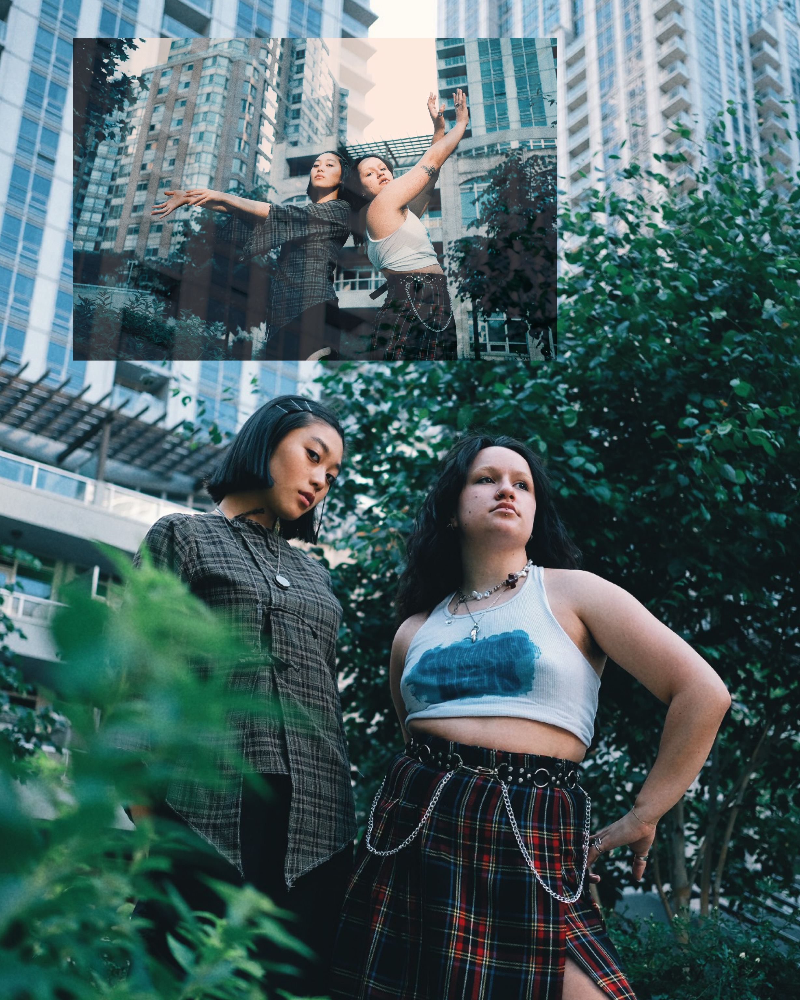

THE JUXTAPOSER JOURNAL
A SEMBLANCE OF THE UNKNOWN
A COMMONPLACE NOTEBOOK
A COLLECTION OF MEMORIES
AN EXPLORATION OF THE UNCANNY


investigations of the corporeal state. the body and the corporation, a corpus and a cloud.
google says: origin:
late 15th century: from latin corporatus, past participle of corporare ‘form into a body’, from corpus, corpor- ‘body.’
where does the ___ end, where does the ___ begin?